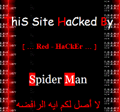

|
|
سایت کانون زنان ایرانی برای چهارمین بار هک شد
يكشنبه14 مهر 1387
تغییربرای برابری- سایت کانون زنان ایرانی به فاصله 10 روز برای بار چهارم حک شد. این بار هکر های گمنام این سایت با نام

"مردعنکبوتی" و "هکر قرمز" ظاهر شده اند.
به نظرمی اید رابطه مستقیمی بین انتشار خبر درباره زهرا بنی یعقوب و هکرها وجود دارد. حدود 10 روز پیش وقتی سایت کانون زنان ایرانی نزدیک به سالگرد زهرا بنی یعقوب گزارشی درباره وضعیت پرونده زهرا ارائه داد هک شد و این بار نیز بعد از پوشش خبر مراسم سالگرد زهرا.
مسئولان فنی سایت کانون درحال رفع مشکل هستند.
خبر قبلی درباره هک شدن سایت کانون را در زیر ببینید.